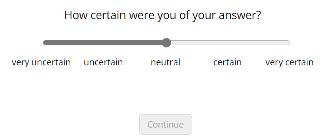

<!DOCTYPE html>
<html>
  <head>
    <title>My experiment</title>
    <script src="jspsych-6.0.5/jspsych-6.0.5/jspsych.js"></script>
    <script src = "jspsych-6.0.5/jspsych-6.0.5/bowser.js"></script>
    <script src="jspsych-6.0.5/jspsych-6.0.5/plugins/jspsych-html-keyboard-response.js"></script>
    <script src="jspsych-6.0.5/jspsych-6.0.5/plugins/jspsych-image-keyboard-response.js"></script>
    <script src="jspsych-6.0.5/jspsych-6.0.5/plugins/jspsych-survey-multi-choice.js"></script>
    <script src="jspsych-6.0.5/jspsych-6.0.5/plugins/jspsych-html-slider-response.js"></script>
    <script src="jspsych-6.0.5/jspsych-6.0.5/plugins/jspsych-preload.js"></script>
    <script src="jspsych-6.0.5/jspsych-6.0.5/plugins/jspsych-call-function.js"></script>
    <script src = "jspsych-6.0.5/jspsych-6.0.5/plugins/jspsych-instructions.js"></script>
    <link href="jspsych-6.0.5/jspsych-6.0.5/css/jspsych.css" rel="stylesheet" type="text/css"></link>
    
    <style>
      span {
        font-size:30px;
      }
    
      li {
        text-align: left;
      }
    
      ul {
        list-style: none;
      }

      #active_option {
        font-size: 30px;
        outline: 0.8px solid rgb(0, 0, 0);
        margin-top: 5px;
        padding: 10px;
      }

      #unactive_option{
        font-size: 30px;
        margin-top: 4px;
        padding: 10px;
      }
    
      #option {
        font-size:30px;
        margin-top: 4px;
        padding: 10px;
      }
    
      #feedback {
        font-size:30px;
      }
    
      #correct{
        font-size:30px;
        color: green;
      }
    
      #wrong{
        font-size:30px;
        color:crimson;
      }
    
      #instructie{
        font-size:20px;
      }
    
    </style>
  </head>
  
  <body></body>
  
  <script>

var preload = {
  type: 'preload',
  images: ['img/example-confidence.png', 'img/example-correct.png', 'img/example-four-options.png', 'img/example-one-option.png', 'img/example-wrong.png']
}

/*---------------------------------------------------------------General------------------------------------------------------------------*/
// functions
// SHUFFLE FUNCTION: shuffles array with seed
function shuffle(array, seed) {
  var m = array.length, t, i;

  // While there remain elements to shuffle…
  while (m) {

    // Pick a remaining element…
    i = Math.floor(random(seed) * m--);

    // And swap it with the current element.
    t = array[m];
    array[m] = array[i];
    array[i] = t;
    ++seed
  }

  return array;
}

// generate a random number with seed
function random(seed) {
  var x = Math.sin(seed++) * 10000;
  return x - Math.floor(x);
}

// PAIR DUTCH WORDS WITH TRANSLATION
function Wordpair_training(en, swa) {
    this.en = en;
    this.swa = swa;
  }

function Wordpair(en, swa, swar1, swar2, swar3) {
    this.en = en;
    this.swa_juist = swa;
    this.swa_rand1 = swar1;
    this.swa_rand2 = swar2;
    this.swa_rand3 = swar3
  }

// arrays with English and Swahili words
var woorden_training_en = ["bottle", "plane", "tea"];
var woorden_training_swa = ["ufunguo", "chai", "daftari"];
var extra_woorden_training_swa = ["kupika", "muguuzi", "dawati", "fizi", "umwagaji", "fimbo", "alama", "krismasi",
                                  "jua", "dhoruba", "kuchoma", "mwimbaji"]

//var woorden_en = ["tree" , "pen", "telephone", "notebook", "frame"];
var woorden_en = ["bed", "berry", "mosquito","pudding", "sock", "fish", "sun", "cat",
                  "boat", "bridge", "box", "donkey", "dog", "coffin", "knee", "lamp",
                  "basket", "nose", "window", "spider", "tooth", "flag", "fork", "wolf",
                  "column", "cop", "apple", "cup", "flower", "letter", "bread", "bucket",
                  "hammer", "candle", "spoon", "olive", "shelf", "shoe", "snake", "stone",
                  "marker", "wheel", "train", "gift", "hill", "ladder", "eel", "perfume",
                  "scissors", "cigar", "tomato", "finger", "shop", "curtain", "body", "ceiling",
                  "key", "tissue", "bonfire", "shoulder", "park", "cave", "salmon", "bank",
                  "clock", "rose", "picture", "book", "door", "human", "giraffe", "pants",
                  "woman", "sheet", "list", "mother", "music", "banana", "number", "page",
                  "mirror", "notebook", "office", "elephant", "poster", "triangle", "towel",
                  "magazine", "telephone", "squirrel", "puppet"];

//var woorden_swa = ["adui" , "hasira" , "nyota" , "mchuzi" , "kusanya"];
var woorden_swa = ['sabuni', 'sahani', 'samaki', 'sayari', 'sehemu', 'surali', 'tanuri', 'trekta', 'ufagio', 'ugomvi',
                  'madungog', 'mahitabo', 'mapintas', 'martilyo', 'napakyas', 'paghalad', 'paghukom', 'pagpalit',
                  'matumai', 'matumbo', 'mazishi', 'mchanga', 'mechezo', 'mgonjwa', 'msumari', 'mundamo',
                  'kazi', 'kioo','kisu', 'kiti', 'kito', 'leso', 'maji', 'mali', 'maua', 'mbwa', 'mkuu', 'moyo', 'mvua',
                  'pagsulod', 'pagtabon', 'pagtawag', 'pagtukod', 'pangalan', 'sensilyo', 'silingan', 'tindashan',
                  'adui', 'afya', 'aibu', 'basi', 'bega', 'buli', 'dari', 'duka', 'elfu', 'geza', 'goti', 'haki', 'hofu',
                  'jiwe', 'pamahaw', 'sulagma', 'tinapay', 'tuburan', 'bililhon', 'kabalaka', 'kasadpan', 'katuyoan',
                  'uyoga', 'wimbo', 'wingi', 'wingu', 'adhabu', 'bafuni', 'bahari', 'baiski', 'bunifu', 'chombo',
                  'kamwe', 'kemia', 'kesho', 'kiatu', 'kifua', 'kofia', 'kubwa', 'kumba', 'kweli', 'lugha', 'mamba',
                  'agalon', 'babaye'];

// Extra Swahili words (not the actual translations)
var extra_swa = ['nchi', 'osha', 'seri', 'simu', 'soko', 'twai', 'watu', 'kama', 'tena', 'mara', 'kuna', 'kila',
                'bado', 'akili', 'amani', 'asili', 'barua', 'bendi', 'bloke', 'chaki', 'chuki', 'chuma', 'chupa',
                'chupi', 'daima', 'fedha', 'funzi', 'gundi', 'hamsi', 'hatua', 'ijayo', 'imani', 'jansa', 'juuya',
                'kamba', 'mbuzi', 'mdudu', 'mekno', 'mfuko', 'miaka', 'mkasi', 'mkate', 'mkboa', 'mraba', 'msitu',
                'mtawa', 'mungu', 'mvuke', 'mwezi', 'nanga', 'ndege', 'ndezu', 'ndizi', 'ndogo', 'ndugu', 'ngazi',
                'ngono', 'nogozi', 'nopya', 'nyota', 'nzuri', 'ofisi', 'panya', 'petye', 'picha', 'pombe', 'punda',
                'pwani', 'rangi', 'shule', 'siagi', 'tembo', 'tumbo', 'uadui', 'uhuru', 'ukame', 'uongo', 'usiku',
                'choori', 'dakika', 'daraja', 'dizeli', 'farasi', 'furaha', 'gorisi', 'godoro', 'guruwe', 'hasira',
                'hazini', 'ishara', 'ishiri', 'jeraha', 'jibini', 'jikoni', 'jokofu', 'jumatu', 'kaburi', 'kahawa',
                'kalamu', 'katika', 'kelele', 'kichwa', 'kidole', 'kihozi', 'kijiko', 'kikapu', 'kimysa', 'kinywa',
                'kisiwa', 'kitovu', 'kovuli', 'kuacha', 'kubale', 'kuhesa', 'kununa', 'kunywa', 'kuzama', 'mageho',
                'maisha', 'mapafu', 'mashua', 'mbolea', 'mchawi', 'mchuzi', 'mlango', 'mpishi', 'mtirka', 'mwanga',
                'mzungu', 'ndoora', 'nyange', 'nyeusi', 'nyundo', 'nyundu', 'rafiki', 'rombus', 'ukweli', 'wakala',
                'washia', 'welder', 'yatima', 'haraka', 'alizeti', 'baadaye', 'baharia', 'bandari', 'bilaska',
                'bustani', 'chubani','filimbi', 'kartasi', 'kawaida', 'kengele', 'kitanda', 'kitande', 'kudhibi',
                'kujenga', 'kukimba', 'kumbuka', 'kupanda','kusanya', 'kushoto', 'mvringo', 'mwanake', 'ndaniya',
                'neyemba', 'punguza', 'shimoni', 'singizi', 'starehe', 'sufuria', 'sungura', 'takatak', 'tamasha',
                'abug', 'ahos', 'asin', 'atay', 'atop', 'awit', 'baba', 'baga', 'baho', 'baki', 'bala', 'baso',
                'bata', 'bili', 'bino', 'daub', 'dila', 'duga', 'edad', 'gabi', 'goma', 'hari', 'init', 'isda',
                'itik', 'kaso', 'kawa', 'kopa', 'kuta', 'lima', 'liog', 'liso', 'lobo', 'lubi', 'luha', 'pala',
                'pito', 'suga', 'suka', 'tawo', 'abang', 'baboy', 'bakus', 'bugas', 'dagat', 'ganti', 'gubat',
                'gutom', 'hulma', 'iring', 'karon', 'lamok', 'layag', 'lisud', 'pilak', 'rayna', 'silya', 'taras',
                'tubag', 'umaga', 'kasuko', 'kerida', 'kugita', 'lalake', 'napulo', 'pintal', 'pundok', 'salita',
                'tambok', 'tualya', 'abogado', 'bahandi', 'bentaha', 'bulwawan', 'bungtod', 'estante', 'kabuang',
                'kalipay', 'kamantis', 'kanding', 'kasamok', 'lamigas', 'mahugaw', 'pagduol', 'paghago', 'pahiyum',
                'bituin', 'bunyag', 'skina', 'hagdan', 'hangyo', 'ihalas', 'kadaot', 'kaili', 'ulimwengu',
                'sweta', 'betri', 'utepe'];

// shuffle arrays
shuffle(woorden_en, 2);
shuffle(woorden_swa, 0);
shuffle(extra_swa,5);

// all the word pairs
var wordpairs_training = [];
var wordpairs = []; //array of 'wordpair' objects

// loop to put words in objects
// TO DO: change 5 to total number of English words
for( i=0; i<3; i++){
  wordpairs_training[i] = new Wordpair_training(woorden_training_en[i], woorden_training_swa[i]);
}

for( i=0; i<90; i++){
  wordpairs[i] = new Wordpair(woorden_en[i], woorden_swa[i], extra_swa[3*i], extra_swa[3*i+1], extra_swa[3*i+2]);
  console.log(wordpairs[i]);
}

// shuffle extra Swahili array
shuffle(extra_swa, 2);

// Create timeline
var timeline = [];


// instruction welcome
var instruction_welcome = {
  type: 'html-keyboard-response',
  stimulus:
  `
  <p><b>Welcome to the second part of our experiment.</b></p>
  <p>In the first part of our experiment, you have learned some words of a new language.</p>
  <p>Your learning performance will be checked in the second part of our experiment today.</p><br>
  <p>Before you start this part, please have a check whether it is 24 hours (maximally 1 hour earlier or later, but definitely no more than that) after you start the first part.</p>
  <p>If not, I am sorry that you can not get into the second part of this experiment. Please quit and contact the experimenter.</p>
  <p>If so, please press any key to continue.</p>
  `,
  data: {useful_data: false},
  on_start: function(trial){
    var browser_name = bowser.name
    if (browser_name == 'Safari'){
      trial.stimulus = 'The Safari webbrowser is not suited for this experiment.'
      jsPsych.endExperiment('The Safari webbrowser is not suited for this experiment.')
    } else {
      trial.stimulus =
      `
      <p><b>Welcome to the second part of our experiment.</b></p>
      <p>In the first part of our experiment, you have learned some words of a new language.</p>
      <p>Your learning performance will be checked in the second part of our experiment today.</p><br>
      <p>Before you start this part, please have a check whether it is 24 hours (maximally 1 hour earlier or later, but definitely no more than that) after you start the first part.</p>
      <p>If not, I am sorry that you can not get into the second part of this experiment. Please quit and contact the experimenter.</p>
      <p>If so, please press any key to continue.</p>
      `
    }
  }
};
timeline.push(instruction_welcome);


var url_variable = jsPsych.data.urlVariables();
var participant_number = url_variable.PROLIFIC_PID;


//TIJDELIJK CATHY VERANDER DIT!!!!!!!
//var participant_number = 1;


// Define instructions trial
var instructions_general = {
  type: "html-keyboard-response",
  stimulus: "<span  id= 'instructie'>The experiment today consists of 2 phases.<br>"+
            "You will start with phase 1: the first test.<br><br> "+
            "Press any key to continue.</span>",
  post_trial_gap: 100,
  data: {useful_data: false}
};
timeline.push(instructions_general);


/*---------------------------------------------------------Phase 4---------------------------------------------------------*/

var instructions_phase4part1 = {
    type: "html-keyboard-response",
    stimulus: "<span  id= 'instructie'><b>Phase 1: the first test</b><br><br>"+
              "Now we will start with the first test today.<br><br>" +
              "Press any key to continue.</span>",
    post_trial_gap: 100,
    data: {useful_data: false}
  };
  timeline.push(instructions_phase4part1);

var instructions_phase4part2 = {
    type: "html-keyboard-response",
    stimulus: 
    `<span id= 'instructie'><b>phase 1: the first test</b><br><br> 
      On each trial, You will see 1 English word, together with 4 possible translations.<br>
      You need to indicate the correct translation by pressing "f", "v", "n" or "j" on the keyboard.</span><br><br><br>
     <span id= 'instructie'><b>Here is an example</b></span><br><br>
     <table>
      	<tbody>
          <tr>
            <td><span> &nbsp; &nbsp; &nbsp; &nbsp; &nbsp; &nbsp; &nbsp; &nbsp; ${wordpairs_training[0].en} &nbsp; &nbsp; &nbsp; &nbsp; &nbsp; </span></td>
            <td>
              <p id = "option" > f) ${wordpairs_training[0].swa} </p>
              <p id = "option" > v) ${extra_woorden_training_swa[0]} </p>
            </td>\
            <td>\
              <p id = "option" > j) ${extra_woorden_training_swa[1]} </p>
              <p id = "option" > n) ${extra_woorden_training_swa[2]} </p>
            </td>
          </tr>
        </tbody>
     </table><br><br>
     <span id='instructie'>Press any key to continue</span>
    `,
    post_trial_gap: 100,
    data: {useful_data: false}
  };
  timeline.push(instructions_phase4part2);

var instructions_phase4part3 = {
    type: "html-keyboard-response",
    stimulus: 
    `<span  id= 'instructie'><b>phase 1: the first test</b><br><br>
    After you gave your answer, you will indicate how certain you were about your answer.<br>
    This will happen on a scale from 1 (very uncertain) to 5 (very certain).<br>
    For this, you will need to use your mouse instead of your keyboard.<br>
    You must first click the confidence bar before you can proceed.<br> 
    Because the bar starts in the neutral option, if you want to choose that neutral option, you must click on some other option, followed by the neutral one.</span><br><br> 
   <span id='instructie'><b>Here is an example</b></span><br>
   <br><br>
   <span id='instructie'>Press any key to continue.</span>
   `,
    post_trial_gap: 100,
    data: {useful_data: false}
    };
  timeline.push(instructions_phase4part3);

shuffle(wordpairs, 5);
// LOOP: display English word with 4 Swahili options. Choose 1 & afterwards indicate certainty
for( i = 0; i<wordpairs.length; i++){
        var en_word = wordpairs[i].en; // Get English word
        var correct_swa_word = wordpairs[i].swa_juist; // Get correct Swahili translation
        var swa_words = [wordpairs[i].swa_rand1,  wordpairs[i].swa_rand2, wordpairs[i].swa_rand3]; // Get multiple choice options
        var index_juiste_swa = Math.floor( Math.random()*4 ); // Generate index for correct Swahili word
        swa_words.splice(index_juiste_swa, 0, correct_swa_word); // Add correct Swahili word to array

        // Get correct answer: f,v,j or n
        var correct_answer = 'x';
        switch(index_juiste_swa) {
            case 0:
                correct_answer = 'f';
                break;
            case 1:
                 correct_answer = 'v';
                break;
            case 2:
                correct_answer = 'j';
                break;
            case 3:
                correct_answer = 'n';
                break;
            default:
                console.log('error');
            }

        //stimulus formated in html
        var html_stimulus =
          '<table>\
            <tbody>\
              <tr>\
                <td><span>' + en_word + ' &nbsp; &nbsp; &nbsp; &nbsp; &nbsp; </span></td>\
                <td>\
                  <p id = "option" > f) ' + swa_words[0] + '</p>\
                  <p id = "option" > v) ' + swa_words[1] + '</p>\
                </td>\
                <td>\
                  <p id = "option" > j) ' + swa_words[2] + '</p>\
                  <p id = "option" > n) ' + swa_words[3] + '</p>\
                </td>\
              </tr>\
            </tbody>\
          </table>';

        //Display English word w/ 4 Swahili options
        var multi_choice_block_phase4 = {
            type : 'html-keyboard-response',
            stimulus: html_stimulus,
            choices : ['f' , 'v' , 'j', 'n'],
            //trial_duration: 10,
            data: {en_word: en_word, options: swa_words, swa_word: correct_swa_word, correct_answer: correct_answer,useful_data: true, phase: 4},
            on_finish: function(data){ // Check if answer is correct
                var accuracy = false;
                if( data.correct_answer == jsPsych.pluginAPI.convertKeyCodeToKeyCharacter(data.key_press)){
                    accuracy = true;
                }
                data.input_answer =  jsPsych.pluginAPI.convertKeyCodeToKeyCharacter(data.key_press); // Add given answer to the dataset
                // add input word to dataset
                switch(data.input_answer){
                  case 'f':
                    data.input_word = data.options[0]
                    console.log(data.input_word);
                    break;
                  case 'v':
                    data.input_word = data.options[1];
                    console.log(data.input_word);

                    break;
                  case 'j':
                    data.input_word = data.options[2];
                    console.log(data.input_word);

                    break;
                  case 'n':
                    data.input_word = data.options[3];
                    console.log(data.input_word);

                    break;
                  default:
                    console.log('fault');
                }
                data.accuracy = accuracy;// Add accuracy to the dataset
            }
        }

        //Display certainty rating scale
        var cert_rating_phase4 = {
            type: 'html-slider-response',
            stimulus: ' &nbsp; &nbsp; &nbsp; &nbsp; How certain were you of your answer? &nbsp; &nbsp; &nbsp; &nbsp; &nbsp; </p>',
            labels: ['very uncertain', 'uncertain', 'neutral', 'certain', 'very certain'],
            min: 1,
            max: 5,
            step: 1,
            start: 3,
            require_movement: true,
            //trial_duration: 10,
            data: {useful_data: true, phase:4},
            on_finish: function(data){
              jsPsych.data.get().addToLast({certainty: data.response});
            }
        };
        // Push stimulus on the timeline
        timeline.push(multi_choice_block_phase4, cert_rating_phase4);

    }

/*---------------------------------------------------------Phase 5---------------------------------------------------------*/
var instructions_phase4to5 = {
    type: "html-keyboard-response",
    stimulus: "<span  id= 'instructie'>This is the end of the first test.<br><br>"+
              "The next phase is the second (last) test<br><br>"+
              "Press any key to take the second (last) test.</span>",
    post_trial_gap: 100,
    data: {useful_data: false}
  };
  timeline.push(instructions_phase4to5);

var instructions_phase5part1 = {
  type: "html-keyboard-response",
  stimulus:
  `<span id= 'instructie'><b>phase 2: the second (last) test</b><br><br> 
      On each trial, You will see 1 English word, together with 4 possible translations.<br>
      You need to indicate the correct translation by pressing "f", "v", "n" or "j" on the keyboard.</span><br><br><br>
     <span id= 'instructie'><b>Here is an example</b></span><br><br>
     <table>
      	<tbody>
          <tr>
            <td><span> &nbsp; &nbsp; &nbsp; &nbsp; &nbsp; &nbsp; &nbsp; &nbsp; ${wordpairs_training[0].en} &nbsp; &nbsp; &nbsp; &nbsp; &nbsp; </span></td>
            <td>
              <p id = "option" > f) ${wordpairs_training[0].swa} </p>
              <p id = "option" > v) ${extra_woorden_training_swa[0]} </p>
            </td>\
            <td>\
              <p id = "option" > j) ${extra_woorden_training_swa[1]} </p>
              <p id = "option" > n) ${extra_woorden_training_swa[2]} </p>
            </td>
          </tr>
        </tbody>
     </table><br><br>
     <span id='instructie'>Press any key to continue</span>
    `,
  post_trial_gap: 100,
  data: {useful_data: false}
};
timeline.push(instructions_phase5part1);

var instructions_phase5part2 = {
    type: "html-keyboard-response",
    stimulus: 
    `<span  id= 'instructie'><b>phase 2: the second (last) test</b><br><br>
    After you gave your answer, you will indicate how certain you were about your answer.<br>
    This will happen on a scale from 1 (very uncertain) to 5 (very certain).<br>
    For this, you will need to use your mouse instead of your keyboard.<br>
    You must first click the confidence bar before you can proceed.<br> 
    Because the bar starts in the neutral option, if you want to choose that neutral option, you must click on some other option, followed by the neutral one.</span><br><br> 
   <span id='instructie'><b>Here is an example</b></span><br>
   <br><br>
   <span id='instructie'>Press any key to continue.</span>
   `,
    post_trial_gap: 100,
    data: {useful_data: false}
    };
timeline.push(instructions_phase5part2);


shuffle(wordpairs,4);
// LOOP: display English word with 4 Swahili options. Choose 1 & afterwards indicate certainty
for( i = 0; i<wordpairs.length; i++){
        var en_word = wordpairs[i].en; // Get English word
        var correct_swa_word = wordpairs[i].swa_juist; // Get correct Swahili translation
        var swa_words = [wordpairs[i].swa_rand1,  wordpairs[i].swa_rand2, wordpairs[i].swa_rand3]; // Get multiple choice options
        var index_juiste_swa = Math.floor( Math.random()*4 ); // Generate index for correct Swahili word
        swa_words.splice(index_juiste_swa, 0, correct_swa_word); // Add correct Swahili word to array

        // Get correct answer: f,v,j or n
        var correct_answer = 'x';
        switch(index_juiste_swa) {
            case 0:
                correct_answer = 'f';
                break;
            case 1:
                 correct_answer = 'v';
                break;
            case 2:
                correct_answer = 'j';
                break;
            case 3:
                correct_answer = 'n';
                break;
            default:
                console.log('error');
            }

        //stimulus formated in html
        var html_stimulus =
          '<table>\
            <tbody>\
              <tr>\
                <td><span>' + en_word + ' &nbsp; &nbsp; &nbsp; &nbsp; &nbsp; </span></td>\
                <td>\
                  <p id = "option" > f) ' + swa_words[0] + '</p>\
                  <p id = "option" > v) ' + swa_words[1] + '</p>\
                </td>\
                <td>\
                  <p id = "option" > j) ' + swa_words[2] + '</p>\
                  <p id = "option" > n) ' + swa_words[3] + '</p>\
                </td>\
              </tr>\
            </tbody>\
          </table>';

        //Display English word w/ 4 Swahili options
        var multi_choice_block_phase5 = {
            type : 'html-keyboard-response',
            stimulus: html_stimulus,
            choices : ['f' , 'v' , 'j', 'n'],
            //trial_duration: 10,
            data: {en_word: en_word, options: swa_words, swa_word: correct_swa_word, correct_answer: correct_answer,useful_data: true, phase: 5},
            on_finish: function(data){ // Check if answer is correct
                var accuracy = false;
                if( data.correct_answer == jsPsych.pluginAPI.convertKeyCodeToKeyCharacter(data.key_press)){
                    accuracy = true;
                }
                data.input_answer =  jsPsych.pluginAPI.convertKeyCodeToKeyCharacter(data.key_press); // Add given answer to the dataset
                // add input word to dataset
                switch(data.input_answer){
                  case 'f':
                    data.input_word = data.options[0]
                    console.log(data.input_word);
                    break;
                  case 'v':
                    data.input_word = data.options[1];
                    console.log(data.input_word);

                    break;
                  case 'j':
                    data.input_word = data.options[2];
                    console.log(data.input_word);

                    break;
                  case 'n':
                    data.input_word = data.options[3];
                    console.log(data.input_word);

                    break;
                  default:
                    console.log('fault');
                }
                data.accuracy = accuracy;// Add accuracy to the dataset
            }
        }

        //Display certainty rating scale
        var cert_rating_phase5 = {
            type: 'html-slider-response',
            stimulus: ' &nbsp; &nbsp; &nbsp; &nbsp; How certain were you of your answer? &nbsp; &nbsp; &nbsp; &nbsp; &nbsp; </p>',
            labels: ['very uncertain', 'uncertain', 'neutral', 'certain', 'very certain'],
            min: 1,
            max: 5,
            step: 1,
            start: 3,
            require_movement: true,
            //trial_duration: 10,
            data: {useful_data: true, phase:5},
            on_finish: function(data){
              jsPsych.data.get().addToLast({certainty: data.response});
            }
        };
        // Push stimulus on the timeline
        timeline.push(multi_choice_block_phase5, cert_rating_phase5);

    }


//---------------------------------------------------END AND STORE DATA------------------------------------------------------------
var instructions_phase5toend = {
  type: 'html-keyboard-response',
  stimulus: 
  `
  <span id='instructie'><b>This is the end of the second (last) test</b><br><br>
    Before the end of this experiment, you need to answer two questions.<br><br><br>
    Press any key to continue.
  </span>
  `,
  post_trial_gap: 100,
  data: {useful_data: false},
};
timeline.push(instructions_phase5toend);

var question1 = {
  type: 'html-slider-response',
  stimulus: 
  `
  <span>The words in the foreign language that you learned were actually Swahili words.<br><br> 
    Did you know any Swahili before you started this experiment (before yesterday)?</span><br><br><br>
  `,
  labels: ['not at all', 'little', 'normal', 'much', 'very much'],
  min:1,
  max:5,
  start: 3,
  require_movement: true,
  data: {useful_data: true, phase:6},
  on_finish: function (data) {
    jsPsych.data.get().addToLast({swahili_knowledge: data.response})
  }
}
timeline.push(question1)

var question2 = {
  type: 'html-keyboard-response',
  stimulus: 
  `
  <span>
    Did you already take part in an experiment like this (learning English-Swahili word pairs like here) about a year and a half ago?<br><br><br><br>
    F: Yes &nbsp; &nbsp; &nbsp; &nbsp; &nbsp; &nbsp; &nbsp; J: No
  </span>
  `,
  choices: ['f', 'j'],
  data: {useful_data: true, phase:6},
  on_finish: function (data) {
    switch (jsPsych.pluginAPI.convertKeyCodeToKeyCharacter(data.key_press)) {
      case 'f':
        jsPsych.data.get().addToLast({previous_subject: true});
        break;
      case 'j':
        jsPsych.data.get().addToLast({previous_subject: false});
      default:
        console.log('fault')
    }
  }
}
timeline.push(question2)


// store the data
var call_function = {
  type: 'call-function',
  async: true,
  func: function(done){
    var filename = "Data_part2_participant_" + participant_number
    var filedata = jsPsych.data.get().filter({useful_data: true}).ignore('stimulus').ignore('internal_node_id').ignore('key_press').ignore('time_elapsed').ignore('response').ignore('useful_data').csv()
    var xhr = new XMLHttpRequest()
    xhr.open('POST', 'write_data.php')
    xhr.setRequestHeader('Content-Type', 'application/json')
    xhr.onload = function(){
      done()
    }
    xhr.send(JSON.stringify({filename: filename, filedata: filedata}))
  }
}
timeline.push(call_function)


var instructions_end = {
    type: "html-keyboard-response",
    stimulus: "<span  id= 'instructie' >That's it! Thank you for your participation.<br><br> Press any key to end the experiment.</span>",
    post_trial_gap: 100,
    data: {useful_data: false}
  };
  timeline.push(instructions_end);


    // Start the experiment
    jsPsych.init({
      timeline: timeline,
      show_progress_bar: true,
      on_finish: function() {
        //jsPsych.data.displayData();
        setTimeout("location.href = 'https://app.prolific.co/submissions/complete?cc=CR04WJLJ'", 3000)
        //jsPsych.data.get().filter({useful_data: true}).ignore('stimulus').ignore('internal_node_id').ignore('key_press').ignore('time_elapsed').ignore('response').ignore('useful_data').localSave('csv','phase4_5.csv');
      }
    });


// Select all trials
var all_data = jsPsych.data.get();

// Get csv representation of data and log to console
console.log(all_data.csv());

  </script>
  </html>
